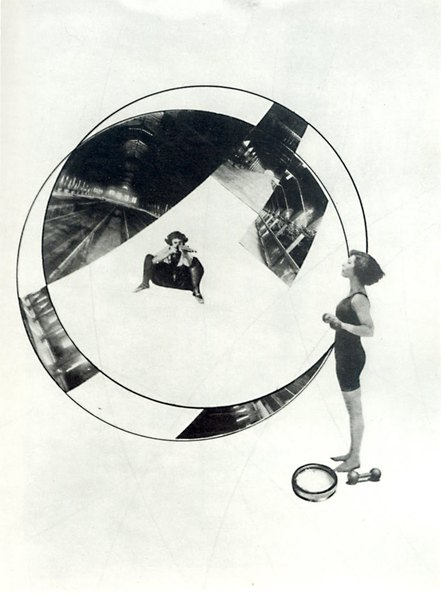
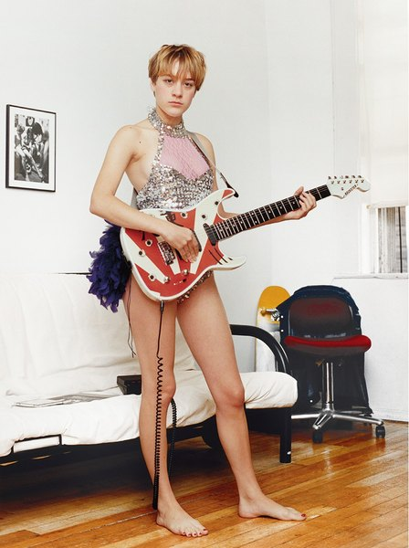
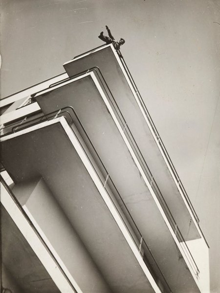
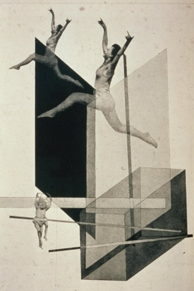
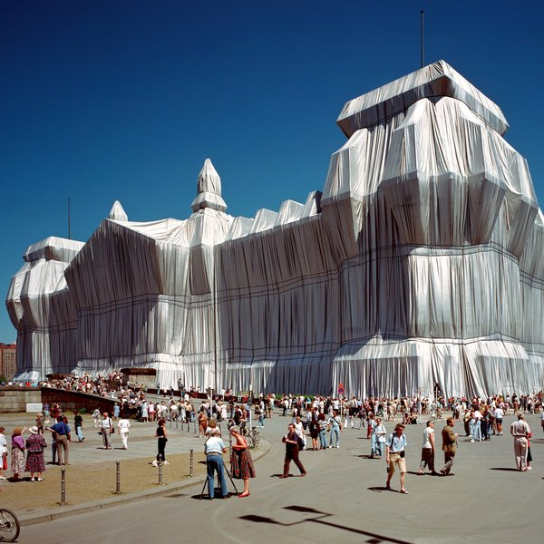
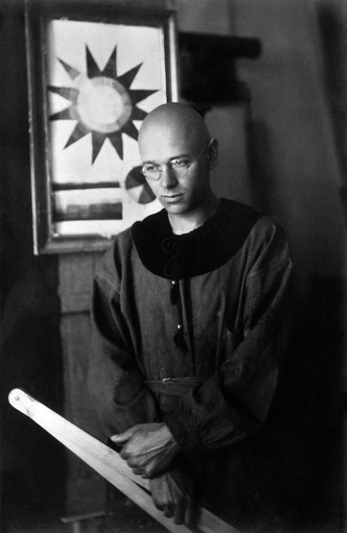

CRVI002118Eva Hesse - Untitled
1965
1965

CRVI002105Martin Kippenberger - Untitled (Aussen Alster Hotel)
1985
1985

CRVI002233Oskar Schlemmer - Bauhausausstellung 1923
1923
1923

CRVI002227László Moholy-Nagy - Untitled

CRVI000799Joseph Beuys - Ein Vergleich zweier Gesellschaftsformen
Polythene carrier bag with felt · art intermedia Edition · 10,000 copies · 1971
Polythene carrier bag with felt · art intermedia Edition · 10,000 copies · 1971

CRVI001757László Moholy-Nagy - Composition A XI
1923
1923

CRVI000802Joseph Beuys - Filzanzug
Felt Suit · edition of 100 · 1970
Felt Suit · edition of 100 · 1970

CRVI002185Wolfgang Laib - Zikkurat
2000
2000

CRVI000800Joseph Beuys - [Beuys with a rose in a graduated cylinder]
Signed photograph
Signed photograph

CRVI001758László Moholy-Nagy - K VII
1922
1922

CRVI000803Joseph Beuys - Capri-Batterie
Kunstmuseum Bonn · photograph by Reni Hansen · 1985
Kunstmuseum Bonn · photograph by Reni Hansen · 1985

CRVI001445Joseph Maria Olbrich - Das Haus Olbrich, Darmstadt
Postcard · Darmstadt artists' colony · 1901
Postcard · Darmstadt artists' colony · 1901

CRVI002244unattributed - Bauhaussiedlung Dessau-Törten, axonometric

CRVI002248Claes Oldenburg and Coosje van Bruggen - Dropped Cone
2001
2001

CRVI002111Bernd and Hilla Becher - Water Towers
1988
1988

CRVI001763Anni Albers - Design for a Jacquard Weaving
1926
1926

CRVI001756László Moholy-Nagy - Pneumatik
1924
1924

CRVI001486Kurt Schwitters - Merz 3 Portfolio: Plate 1
1923
1923

CRVI001925Anselm Kiefer - 20 Years of Solitude
1993
1993

CRVI002237unattributed - Weaving design on graph paper

CRVI002085Wolfgang Tillmans - Portrait with guitar

CRVI001926Anselm Kiefer - Winter Landscape
1970
1970

CRVI000804Joseph Beuys - [Beuys seated on the cobbles]
Signed photograph
Signed photograph

CRVI002088Andreas Gursky - Bahrain I

CRVI002226László Moholy-Nagy - Xanti Schawinsky on a Bauhaus Balcony

CRVI001490Max Ernst - Ambiguous Figures (1 copper plate 1 zinc plate 1 rubber cloth)
1919
1919

CRVI002224László Moholy-Nagy - Human Mechanics

CRVI002238Gunta Stölzl - Jacquard weaving

CRVI001709Alexej von Jawlensky - Girl with the Green Face
1910
1910

CRVI001713Alexej von Jawlensky - Bretonische Bäuerin
1905
1905

CRVI001743Rudolf Schlichter - Lady with a Red Scarf

CRVI002221Anni Albers - Design for a 1926 unexecuted wall hanging
1926
1926

CRVI001635Emil Nolde - Mask Still Life III
1911
1911

CRVI001710Alexej von Jawlensky - Portrait of Alexander Sakharoff
1909
1909

CRVI001638Emil Nolde - Red-Haired Girl
1919
1919

CRVI000848form - form 8
Internationale Revue · 1959 · 1959
Internationale Revue · 1959 · 1959

CRVI001714Heinrich Campendonk - Bucolic Landscape
1913
1913

CRVI002220Anni Albers - Wall hanging

CRVI001643Max Pechstein - Indian and Woman
1910
1910

CRVI001488Unidentified - Dada photomontage naming Raoul Hausmann

CRVI001485Hannah Höch - Photomontage with a child and the letter P

CRVI001715Heinrich Campendonk - Stillleben mit zwei Köpfen
1914
1914

CRVI001483Hannah Höch - Collage of eyes in a vase

CRVI002077Christian Schad - Street scene with figures

CRVI001570Christian Schad - Halbakt
1929
1929

CRVI002232Oskar Schlemmer - Frauenschule
1930
1930

CRVI001489Max Ernst - Self-Portrait
1909
1909

CRVI002075Christian Schad - Portrait of a boy

CRVI001630Ernst Ludwig Kirchner - Wrestlers in a Circus
1909
1909

CRVI001484Hannah Höch - Photomontage with a man holding a white cat

CRVI001716Heinrich Campendonk - Stillleben mit Fisch
1916
1916

CRVI001634Karl Schmidt-Rottluff - Gartenstraße frühmorgens
1906
1906

CRVI001641Max Pechstein - Flusslandschaft
1907
1907

CRVI001750Unidentified - Interior of the Kandinsky/Klee Master House, Dessau

CRVI001633Erich Heckel - Reclining Woman
1909
1909

CRVI002229László Moholy-Nagy - Z II

CRVI002231Oskar Schlemmer - Rot gegeneinander
1928
1928

CRVI002089Andreas Gursky - Times Square, New York
1997
1997

CRVI001707August Macke - Tree in the Cornfield
1907
1907

CRVI001631Ernst Ludwig Kirchner - Coffee Drinking Women
1907
1907

CRVI002086Andreas Gursky - Shanghai
2000
2000

CRVI001766Oskar Schlemmer - Costume from the Triadic Ballet

CRVI001753Unidentified - The Bauhaus building, Dessau

CRVI001636Emil Nolde - Dance Around the Golden Calf
1910
1910

CRVI001642Max Pechstein - The Masked Woman
1910
1910

CRVI001765Anni Albers - Design for Wall Hanging
1925
1925

CRVI002206Wassily Kandinsky - Light Picture (Helles Bild)
1913
1913

CRVI001706Franz Marc - Sheaf of Grain
1907
1907

CRVI001640Max Pechstein - The Red House
1911
1911

CRVI002082Hito Steyerl - Liquidity Inc.
2014
2014

CRVI001563Otto Dix - Self-Portrait
1912
1912

CRVI000798Joseph Beuys - [Beuys with the Eurasienstab]
Signed photograph
Signed photograph

CRVI001637Emil Nolde - Self-Portrait
1912
1912

CRVI001711Alexej von Jawlensky - The Hunchback
1905
1905

CRVI001574Georg Scholz - Exotische Prinzessin
1919
1919

CRVI001712Alexej von Jawlensky - Blaue Vase mit Orangen
1908
1908

CRVI000221Yayoi Kusama - A Bouquet of Love I saw in the Universe
Photograph by Andreas Meichsner · Martin-Gropius-Bau, Berlin · 2021
Photograph by Andreas Meichsner · Martin-Gropius-Bau, Berlin · 2021

CRVI002104Sigmar Polke - Mao
1972
1972

CRVI002239Johannes Itten - Horizontal-Vertical
1915
1915

CRVI002103Sigmar Polke - Schokoladenbild (Chocolate Painting)
1964
1964

CRVI002222Anni Albers - Unfinished study

CRVI002311Neo Rauch - Über den Dächern
2014
2014

CRVI001565Otto Dix - Self-Portrait as Mars

CRVI001705Franz Marc - The Bewitched Mill
1913
1913

CRVI002219Anni Albers - Design 11/25 for Jacquard

CRVI001566Otto Dix - Dying Warrior

CRVI001564Otto Dix - The Street of Brothels
1916
1916

CRVI002207Wassily Kandinsky - Improvisation 28 (second version)
1912
1912

CRVI002317Neo Rauch - Untitled

CRVI002314Neo Rauch - Untitled

CRVI001573Georg Scholz - Street scene with the Upper Silesia plebiscite
1922
1922

CRVI001572Georg Scholz - Industriebauern
1920
1920

CRVI001569Christian Schad - Zwei Mädchen
1928
1928

CRVI001575Georg Scholz - Kakteen und Semaphore
1923
1923

CRVI001930Georg Baselitz - Woodman (Waldarbeiter)
1969
1969

CRVI002310Neo Rauch - Hüter der Nacht
2014
2014

CRVI002315Neo Rauch - Untitled

CRVI001571Christian Schad - Agosta the Pigeon-Chested Man and Rasha the Black Dove
1929
1929

CRVI002074Christian Schad - Woman in profile with a fur

CRVI001752Walter Gropius - Bauhaus Master Houses, Dessau: isometric site plan
1925–1926
1925–1926

CRVI001927Anselm Kiefer - Parsifal III
1973
1973

CRVI001742Rudolf Schlichter - Sie starb daran

CRVI002234Oskar Schlemmer - Danza coi pali (Stäbetanz)
1928
1928

CRVI002236unattributed - Bauhaus weaving, banded stripes in blue, apricot and black

CRVI000849form - form 266
Juli/Aug 2016 · Man/Machine · 2016
Juli/Aug 2016 · Man/Machine · 2016

CRVI001568Christian Schad - Self-Portrait
1927
1927

CRVI001764Anni Albers - Design for a Silk Tapestry
1926
1926

CRVI002027Neo Rauch - Vater
2007
2007

CRVI002076Christian Schad - Operation
1929
1929

CRVI002209Wassily Kandinsky - Improvisation 'Gorge'
1914
1914

CRVI002073Christian Schad - Portrait of Dr. Haustein

CRVI002230László Moholy-Nagy - Bauhausbücher 5: Piet Mondrian, Neue Gestaltung
1925
1925

CRVI002337Neo Rauch - Der blaue Fisch

CRVI002025Neo Rauch - Mars
2002
2002

CRVI001708August Macke - Anglers on the Rhine
1907
1907

CRVI002309Neo Rauch - Gewitterfront
2016
2016

CRVI002107Martin Kippenberger - Buchholz & Schipper
1990
1990

CRVI002108Martin Kippenberger - Untitled

CRVI001639Emil Nolde - Sea with steamers
1910
1910

CRVI002333Neo Rauch - Stille Reserve
2024
2024

CRVI002266Christo and Jeanne-Claude - Wrapped Reichstag
1995
1995

CRVI002026Neo Rauch - Entfaltung
2008
2008

CRVI002336Neo Rauch - Der Übergang
2018
2018

CRVI002028Neo Rauch - Die Stickerin
2008
2008

CRVI001755László Moholy-Nagy - Self-Portrait
1919
1919

CRVI002106Martin Kippenberger - Flying Tanga

CRVI002316Neo Rauch - Untitled

CRVI002312Neo Rauch - Der Felsenwirt
2014
2014

CRVI002087Andreas Gursky - Pyongyang

CRVI000801Joseph Beuys - [Beuys pointing]
Portrait photograph
Portrait photograph

CRVI002313Neo Rauch - Marina
2014
2014

CRVI001632Ernst Ludwig Kirchner - Wehrlin, Facing Front
1924
1924

CRVI002078Christian Schad - Figure in a paper hat

CRVI001754László Moholy-Nagy - Berlin Radio Tower
1928
1928

CRVI001928Anselm Kiefer - Urd, Verdandi, Skuld (The Norns)
1983
1983

CRVI001929Anselm Kiefer - Interior
1981
1981

CRVI001567Max Beckmann - Perseus's Last Duty
1949
1949

CRVI002235Oskar Schlemmer - Das Triadische Ballett — costume group
1926
1926

CRVI002243unattributed - Johannes Itten in his Mazdaznan robe